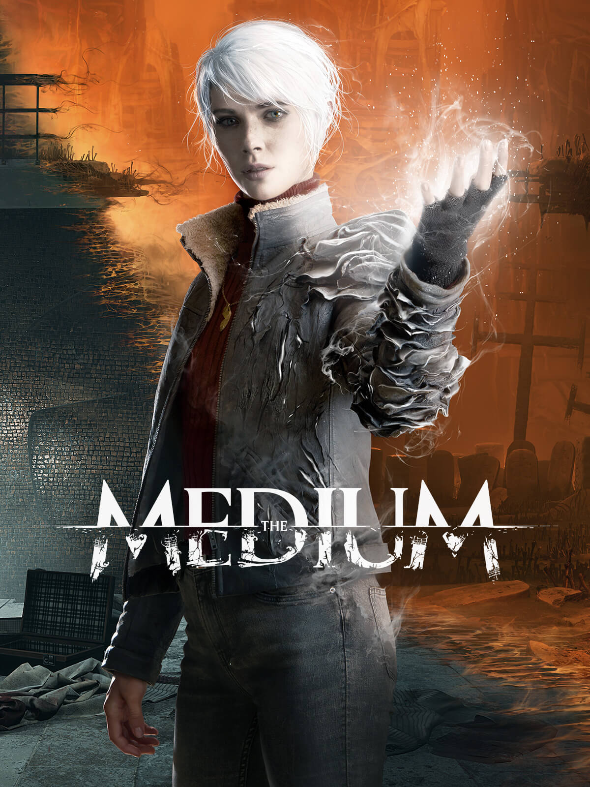
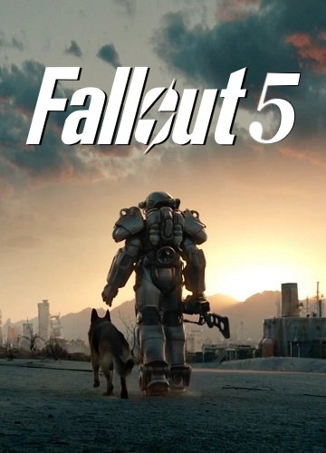
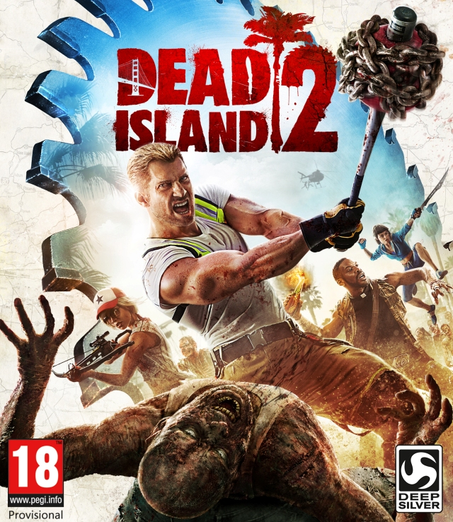
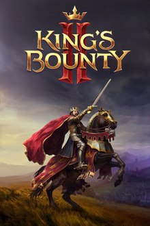
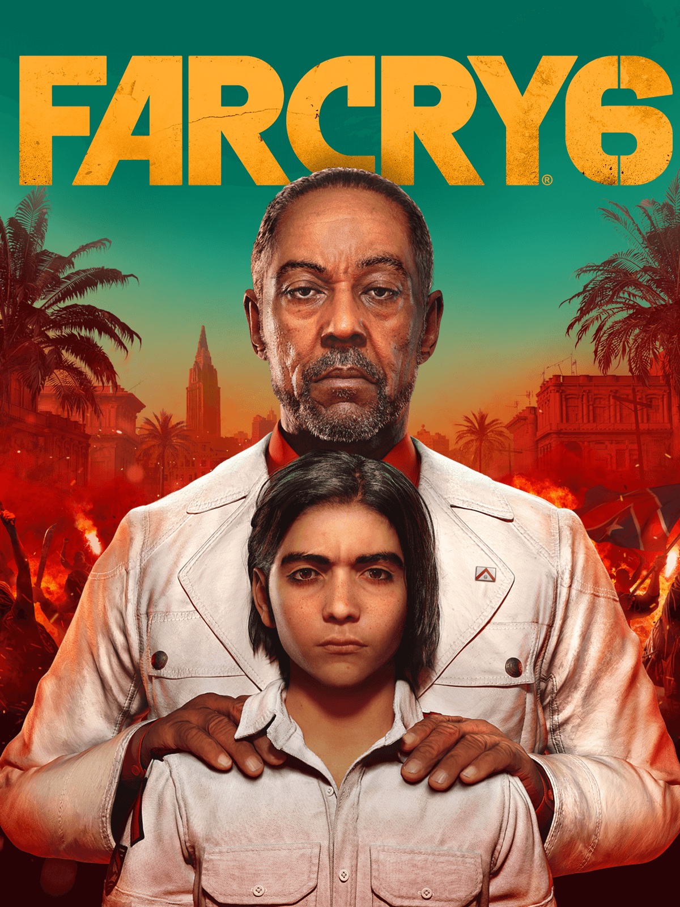
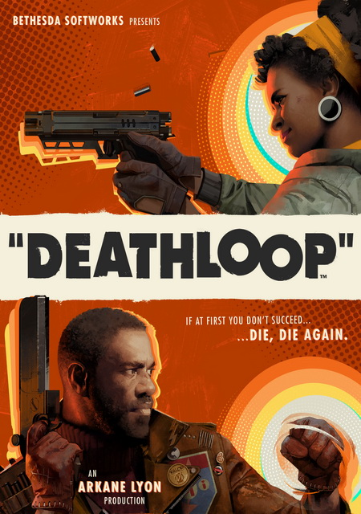
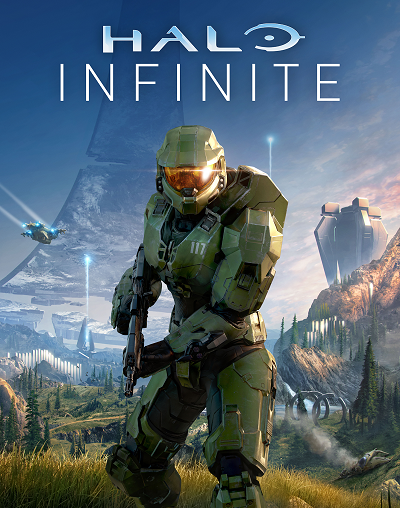
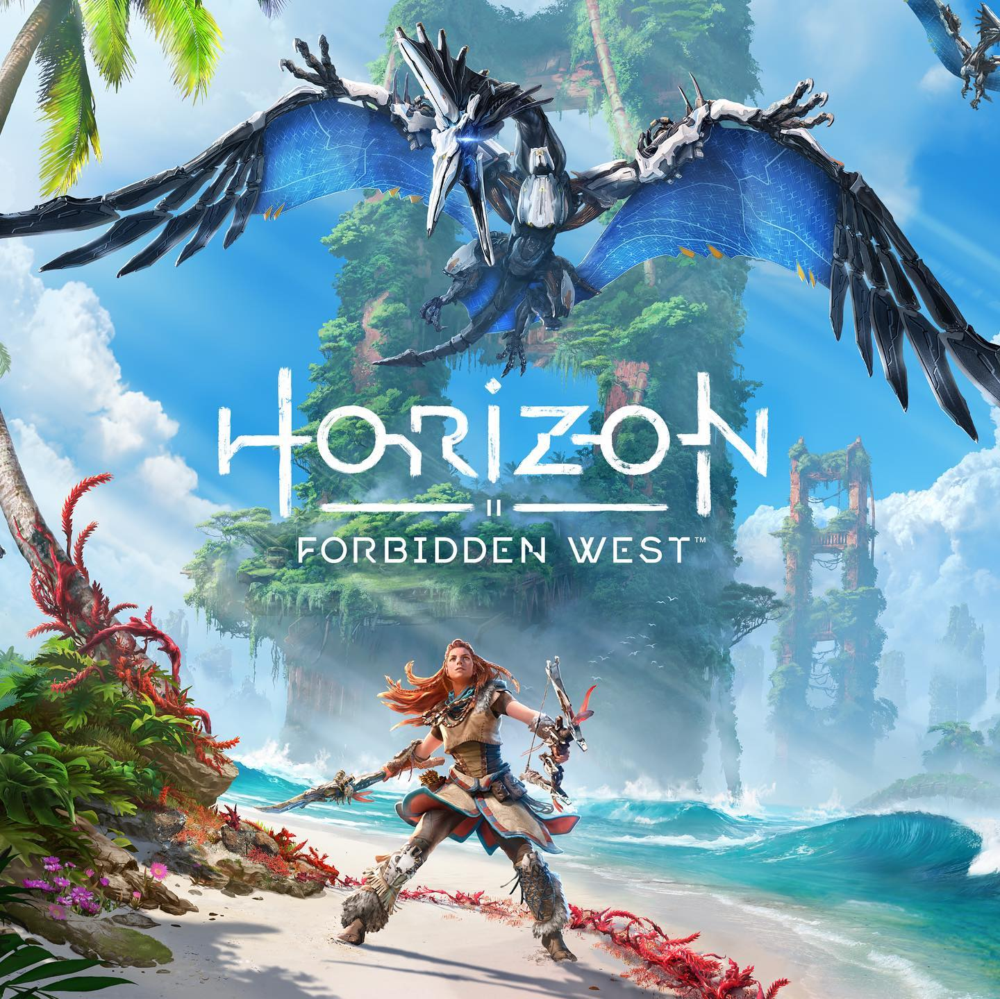

Топ 10 ожидаемых игр 2021 года
Описание ожидаемых игр
-

В Hitman 3 игроку снова предстоит примерить костюмчик высококвалифицированного убийцы, который по-своему борется со злом. Новая игра станет заключительной в трилогии, стартовавшей в 2016 году. Все три части связаны между собой, геймеры смогут импортировать сейвы из прошлых — достигнутый прогресс пригодится.
-

Психологический триллер студии Bloober Team (Blair Witch, Observer). Главная героиня — медиум, которую преследуют видения убийства ребенка. Чтобы найти ответы на все вопросы, способная перемещаться между миром живых и миром духов Марианна отправляется в заброшенный отель-пансионат, где произошла трагедия.
-

С момента релиза Fallout 4 прошло пять лет, два года — с момента релиза крайне спорной Fallout 76. Стоит ли ждать скорой информации о Fallout 5? Едва ли. Bethesda Game Studios сейчас полностью загружена Starfield и The Elder Scrolls 6. Компания точно не потянет еще один крупный проект. Если Fallout 5 и зреет в стенах студии Тодда Говарда, то пока на самой зачаточной стадии, когда создается арт и выбирается потенциальная локация.олностью загружена Starfield и The Elder Scrolls 6. Компания точно не потянет еще один крупный проект.
-

Dead Island 2 — это cиквел экшена про выживание среди зомби, действие которого разворачивается в инфицированной Калифорнии, которая оцеплена войсками США, спустя всего несколько месяцев после инцидента, случившегося в первой части.
-

Оригинальную King’s Bounty отчасти можно назвать легендой, однако с тех пор утекло много воды и о культовой игре вспоминают не так часто (хотя вселенная иногда порождает новые попытки вернуть ей былую славу). В 2019 году была анонсирована King’s Bounty II с планами выпустить ее в 2020-м. «Корона», пандемия — все это сказалось на графике, поэтому ждать пришлось дольше.
-

Диктатор Антон Кастильо и его сын Диего — вот они, главные злодеи (старший уж наверняка). Антон взращивает себе смену: мальчишка должен сменить его на посту и продолжить начатое дело — давить, уничтожать, издеваться и унижать. Так он пытается доказать, что народу требуется сильная рука. Но, чтобы сохранить личный райский мирок, Антон не задумываясь пожертвует своим народом.
-

Шутер от именитых разработчиков — студии Arkane, за плечами которой серия Dishonored, а также игры Prey и Wolfenstein: Youngblood. Изначально проект, издателем которого выступит Bethesda (которая принадлежит ZeniMax, которая принадлежит Microsoft), планировался как временный консольный эксклюзив. Но релиз перенесли с 2020 года на 2021-й, и пока до конца не ясно, остается ли условие в силе (скорее всего, нет).
-

Шутер с давней историей и преданной аудиторией. Halo Infinite станет продолжением Halo 5: Guardians, одновременно дав старт новым приключениям Мастера Чифа. В Microsoft, конечно, называют игру «величайшим приключением ради спасения всего человечества». Однако особенных подробностей о проекте пока нет.
-

Что ж, это будет продолжение истории, начатой в Horizon Zero Dawn: женщина-воин Элой отправится в очередное путешествие по постапокалиптическому миру будущего, населенному странными роботами. Теперь она хочет найти источник заразы, убивающей все, до чего доберется. Понятно, что по пути Элой придется сражаться с новыми неведомыми тварями, открывая новые территории с разнообразным климатом.
-

Согласно описанию, действие игры развернется через несколько лет после событий, описанных в Resident Evil 7. Главный герой Итан Уинтерс вернулся к обычной жизни, которой наслаждается вместе со своей женой. Однако прошлое не отпускает Итана, и из-за Криса Редфилда он попадает в таинственную заснеженную деревушку где-то в Европе. Здесь все и произойдет.